모든 컴플리트 공통 구성
- 세라믹스피드 헤드셋, GT 스페이서·헤드셋 캡
- Black Inc HB01 콕핏, 팔리 카본 싯포스트
- 셀레 이탈리아 SLR 카본 안장, 티타늄 패스너 키트
- 피렐리 P-Zero TLR 레이스 35mm, 투볼리토 TPU 튜브
- 팔리 카본 물통 케이지 2개
편안함이 곧 퍼포먼스입니다.
세상에서 가장 좋은
카본 파이버 자전거를 향해.
팔리 사이클(Parlee Cycles)은 2000년 미국 매사추세츠 비벌리에서 밥 팔리(Bob Parlee)가 설립한 카본 파이버 자전거 브랜드입니다. 보트 빌더로 20년 넘게 복합소재를 다뤄온 그는 세상에서 가장 좋은 자전거를 만들겠다는 단 하나의 목표로 팔리를 시작했습니다. 팔리의 모든 자전거는 밥 팔리의 설계 철학 아래, 숙련된 장인들의 손으로 한 대씩 만들어집니다.
팔리는 퍼포먼스를 '에너지 관리'라는 관점에서 바라봅니다. 라이딩이 40분이든 4시간이든 4일이든, 노면 진동과 피로로 흘려보내는 에너지를 줄일수록 라이더에게는 더 많은 힘이 남습니다. 정교한 카본 레이업, 라이더의 신체에 맞춘 피팅 부품, 더 많은 라이더에게 맞는 지오메트리는 모두 이 철학에서 출발합니다.
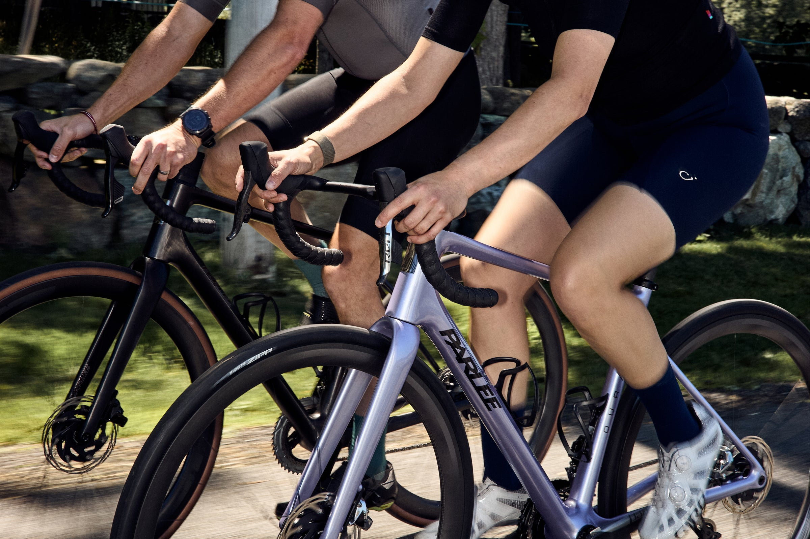
Feel better, ride faster.
몸이 편해야 더 빨라집니다.
자전거는 라이더 몸의 연장처럼 느껴져야 합니다. 팔리는 진보적인 설계와 복잡한 카본 레이업, 그리고 양산 모델과 커스텀 모델 모두에 적용되는 피팅 중심의 접근으로 이 목표를 좇습니다. 탁월함을 기대하는 라이더, 안장 위에서 영감을 받고 싶은 라이더를 위한 브랜드입니다.
팔리는 피로를 줄이고 퍼포먼스를 끌어올리기 위해 라이더를 더 편하게 만드는 데 집중합니다. 그리고 무엇보다 팔리의 빌더들은 자신이 만드는 자전거를 탈 사람을 진심으로 생각합니다.
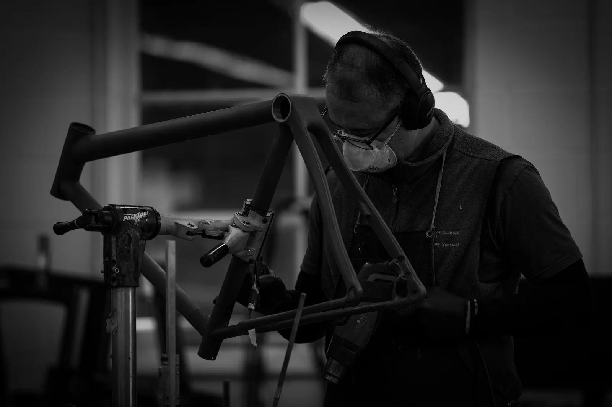
편안함은 퍼포먼스의 반대말이 아닙니다. 편안함이야말로 퍼포먼스를 만들어내는 원천입니다.
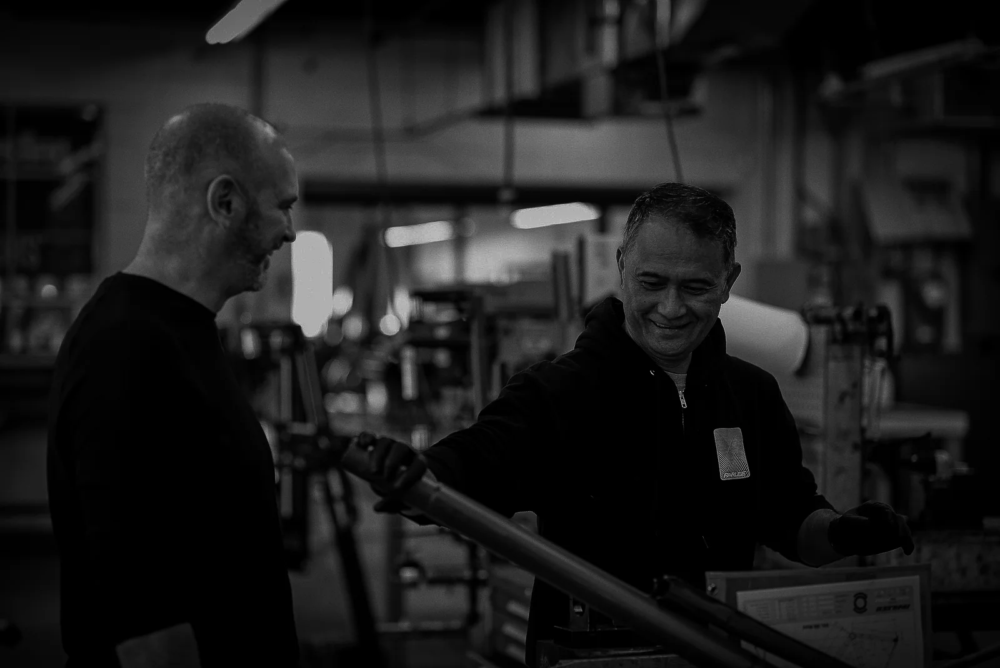
팔리의 자전거에는 그것을 만든 빌더의 손길과, 끝없이 이어지는 엔지니어링의 탐구가 함께 담겨 있습니다.
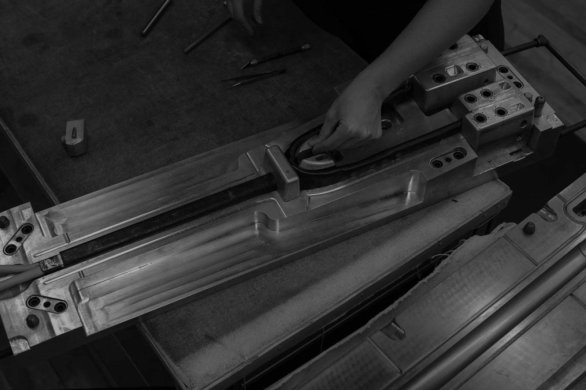
정직과 진정성, 자신이 만든 제품에 끝까지 책임지는 태도. 팔리는 라이더와 파트너를 소중히 여기는 브랜드입니다.
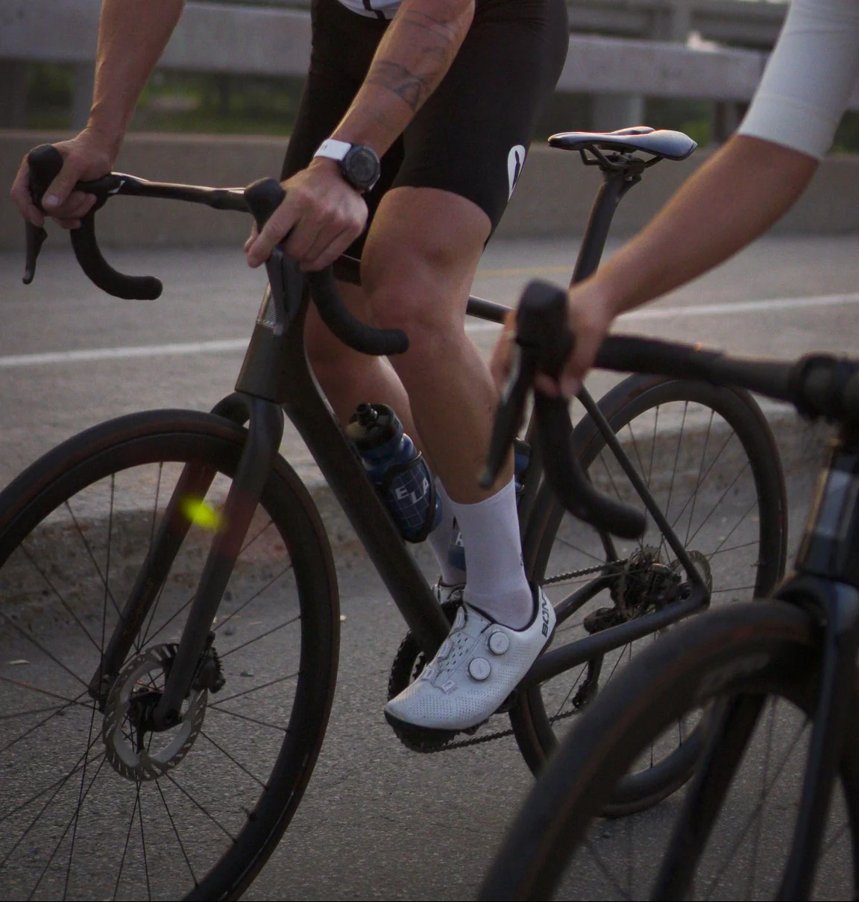
더 적게 만들기 때문에 한 대 한 대가 특별해질 수 있습니다. 팔리는 언제나 손으로 만듭니다.
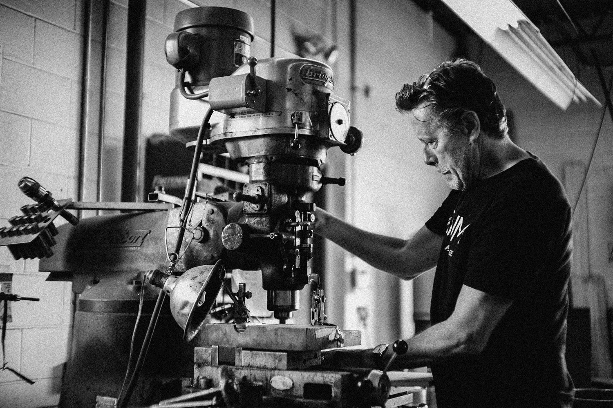
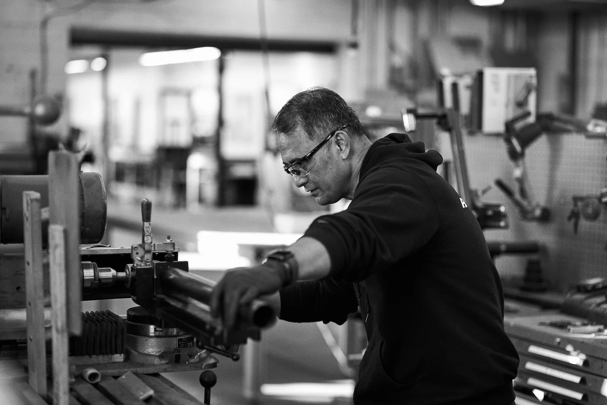
“우리는 2000년, 단순하지만 원대한 목표 하나로 팔리를 세웠습니다. 세상에서 가장 좋은 자전거를 만드는 것.”
보트 제작 분야에서 20년 넘게 일하며 저는 복합소재가 가진 가능성을 잘 알고 있었습니다. 카본 파이버는 퍼포먼스 자전거를 한 단계 끌어올릴 수 있는 분명한 소재였지만, 당시에는 그 잠재력이 온전히 쓰이지 못하고 있었습니다. 카본은 튜브의 크기와 형태를 최적화하고 무게, 강도, 내구성, 컴플라이언스를 세밀하게 조율할 수 있는 소재입니다. 레이업 스케줄과 몰딩 기법을 완성할수록 더 가볍고, 더 빠르고, 더 편안한 자전거가 만들어집니다.
오늘날 카본 파이버는 거의 모든 퍼포먼스 자전거의 소재가 되었고, 그만큼 카본은 디자이너를 스타일리스트로 만들기도 합니다. 하지만 스타일을 퍼포먼스로 착각해서는 안 됩니다. 불필요한 형상은 무게만 더하고 승차감을 떨어뜨릴 뿐입니다. 자동차에 지느러미를 다는 것과 같습니다. 멋져 보일 수는 있어도 차를 빠르게 만들지는 못합니다.
우리의 원칙은 효율입니다. 로드 레이싱, 매일의 트레이닝, 시클로크로스, 하루 종일 이어지는 그래블 어드벤처까지, 목적에 정확히 맞는 성능을 내도록 카본을 전략적으로 사용합니다. 목표에 맞춘 퍼포먼스와 몸에 맞춘 피팅, 그것이 팔리 자전거를 정의합니다.
밥 팔리 (Bob Parlee), 팔리 사이클 창립자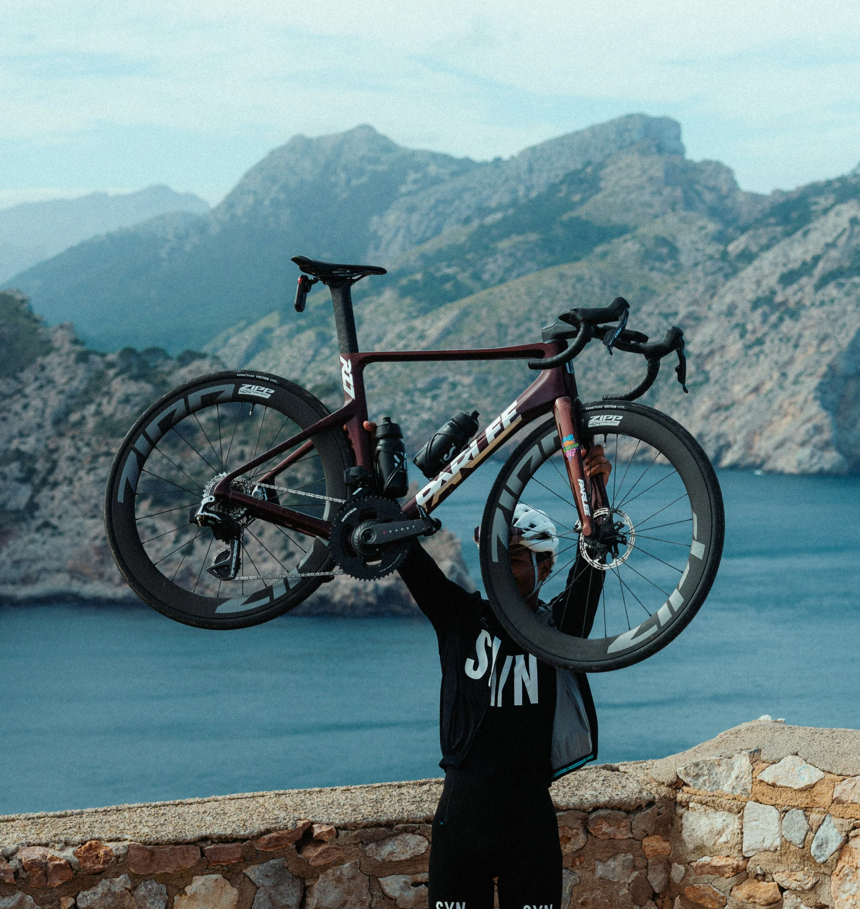
EXPLORE OUR BIKES서로 다른 길, 하나의 원칙. 라이딩이 언제나 먼저입니다.
빨라야 할 곳에서는 빠르고, 부드러워야 할 곳에서는 부드럽게. 현실의 도로를 위한 올로드 바이크입니다.
포장도로가 끝나는 곳에서 비로소 살아나는 그래블 바이크. 빠르고, 유능하고, 어떤 노면에서도 침착합니다.
25년 카본 노하우로 완성한, 라이더 한 사람을 위해 맞춤 제작하는 퍼포먼스 로드바이크입니다.
Further. Faster.
현실의 도로를 위한
진짜 속도.
팔리 유레이(Ouray)는 매일 마주하는 현실의 도로를 위해 설계된 올로드 바이크입니다. 피로 없이 더 긴 코스와 더 큰 목표를 꿈꾸게 합니다. 빨라야 할 곳에서는 빠르고, 부드러워야 할 곳에서는 부드럽게. 유레이는 아무것도 포기하지 않고 도로를 즐길 수 있는 자유를 선사합니다.
2025년 미국 Bicycling 매거진은 유레이를 올로드 바이크 오브 더 이어(All-Road Bike of the Year)로 선정했습니다.
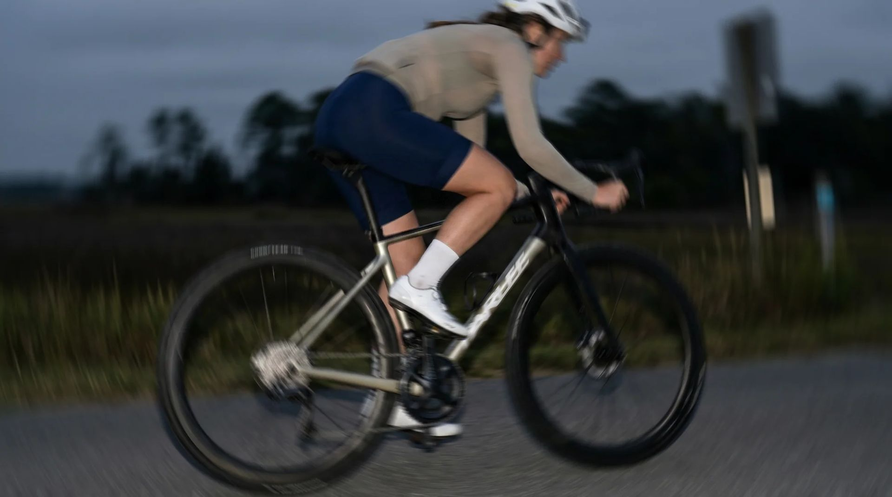
현실의 도로는 거칩니다. 하지만 라이딩까지 거칠 필요는 없습니다. 유레이는 잔진동을 흡수해, 노면이 공사판 같아도 집중력과 속도를 지켜줍니다.
모든 거리를 음미하세요. 더 멀리, 더 빠르게 달리면서도 끝까지 몸이 가벼운 라이더를 위한 자전거입니다.
마감과 피팅, 컴포넌트까지 내가 어떻게, 어디를 달리는지에 맞춰 고릅니다. 모던 퍼포먼스란 나에게 맞춰 빚어진 자전거입니다.
모든 표면과 조인트, 윤곽은 좋은 자전거가 어떤 느낌이어야 하는지 아는 손을 거칩니다. 25년의 경험이 매 킬로미터마다 느껴집니다.
“강하게 밟을 때의 반응과 편안함에 크게 감탄했습니다. 레이스 바이크처럼 빠르지만 레이스 바이크처럼 몸을 맞출 필요는 없는 자전거를 찾는다면, 유레이가 바로 그 답일지 모릅니다.”
Tyler BoucherCYCLING WEEKLY
SET UP TO RIDE YOUR WAY아틀란틱 틸 · 모하비 실버 · 누드 카본
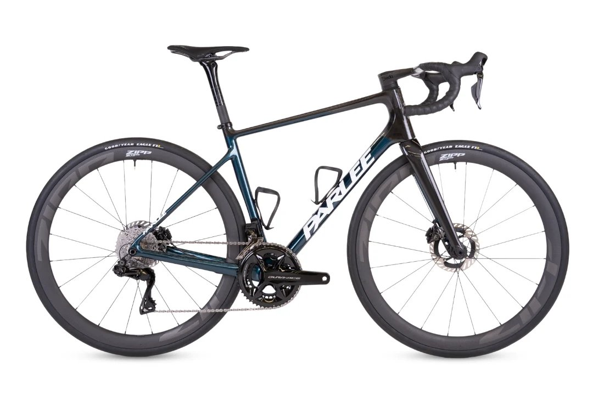
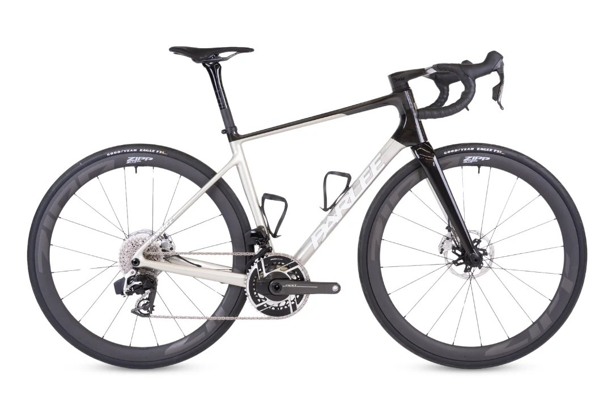
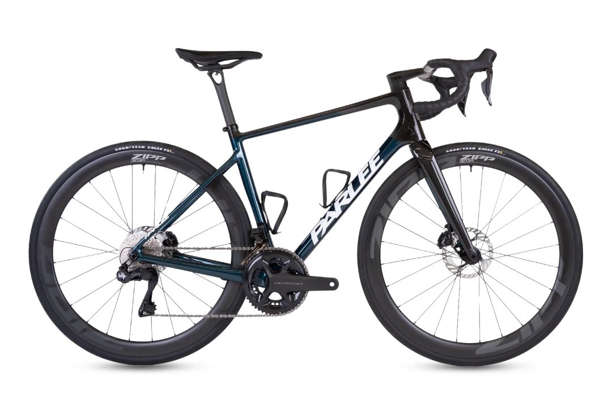
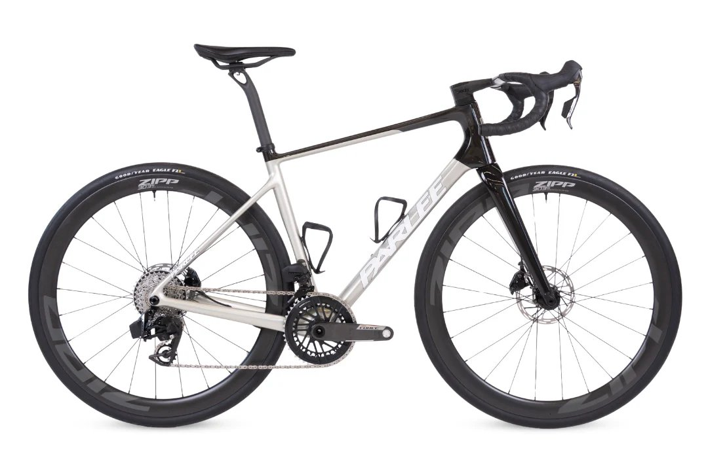
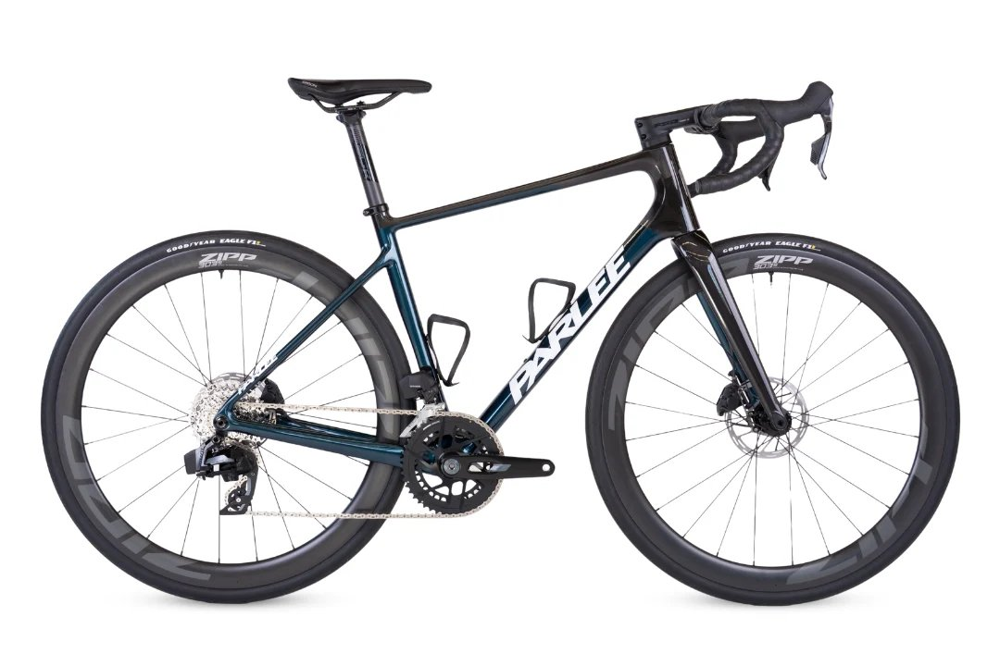
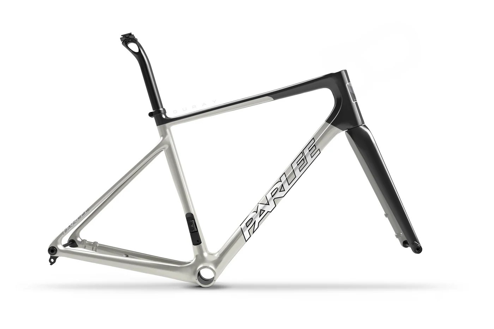
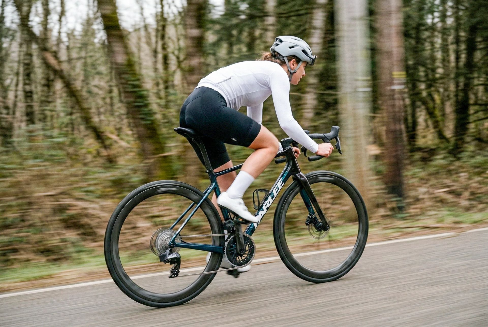
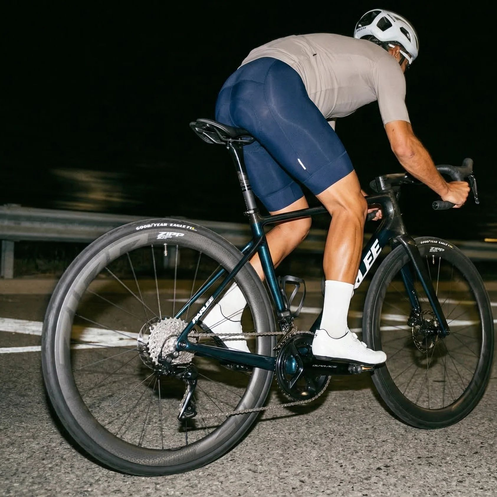
유레이는 팔리가 그리는 현대 로드바이크의 모습입니다. 출발은 더 빠르고, 고속에서는 더 안정적이며, 현실의 노면 조건에 맞춰 설계되었습니다. 다른 로드 플랫폼이 편안함이나 속도 중 하나를 강조할 때, 유레이는 그 둘의 균형을 잡아 빠르고 확신에 찬, 어떤 거리든 기꺼이 달려나가는 자전거를 완성했습니다.
가벼운 구조와 세련된 핸들링 덕분에 긴 솔로 라이딩, 구간 기록 경쟁, 주말 어드벤처 어디에서도 자연스럽습니다. 레이스 바이크의 속도를 하루 종일 지속할 수 있는 자전거, 그것이 유레이입니다.
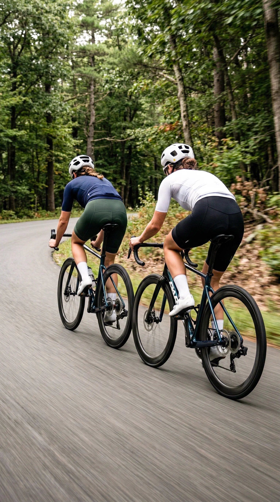
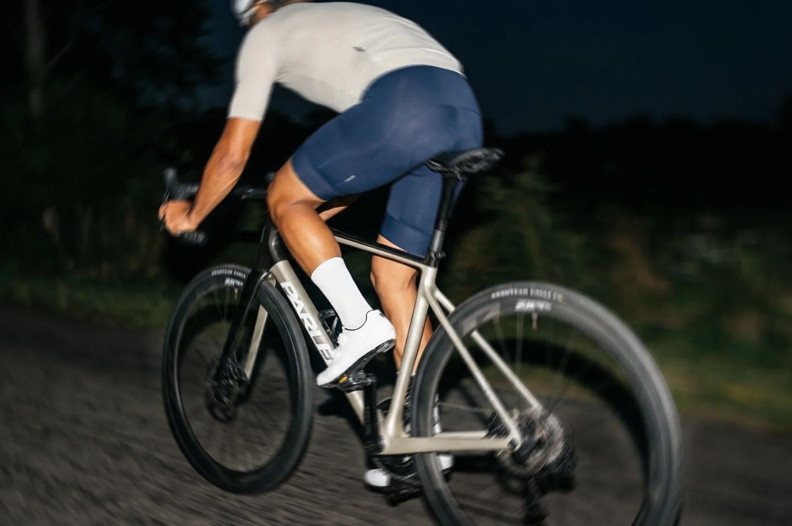
Z5와 알텀(Altum)이 쌓아온 유산 위에서, 유레이는 팔리 로드바이크의 새로운 시대를 엽니다. 슬로핑 탑튜브와 드롭 스테이는 하루 종일 편안하도록 컴플라이언스를 조율하면서도, 향상된 측면 및 비틀림 강성으로 속도를 힘들이지 않고 이어갑니다. 안정적인 휠베이스는 자전거를 노면에 단단히 붙여주고, 모노코크 카본 프레임은 노면 피드백을 무디게 하지 않으면서 잔진동만 걸러냅니다.
공기역학적으로 깔끔한 라인과 목적에 맞춘 형상은 저항을 줄여, 바람에 노출된 긴 오르막과 내리막에서 모멘텀을 지켜줍니다. 결과는 분명합니다. 이전 세대보다 확실히 더 빠르고, 더 가볍고, 더 유능한 로드바이크입니다.
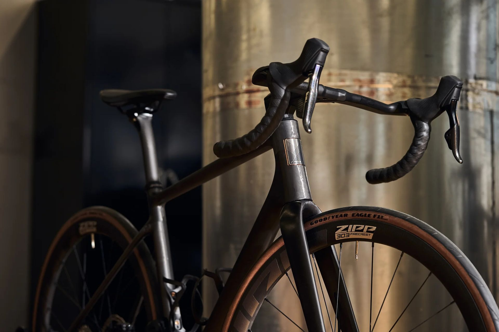
유레이가 진정으로 빛나는 순간은 바로 그 침착함입니다. 코너에 들어서면 아스팔트를 단단히 움켜쥐는 안정감으로 라이더를 차분하고 빠르게 지켜줍니다. 깨진 포장도로, 끝없는 공사 구간, 관리되지 않은 시골길도 망설임 없이 지나갑니다.
최대 40mm 타이어 클리어런스로 편안함과 그립, 겨울철 노면을 위해 더 넓은 타이어를 써도 속도를 잃지 않습니다. 통증도, 긴장으로 핸들을 움켜쥘 일도 없이 레이스 바이크의 속도를 누리세요.
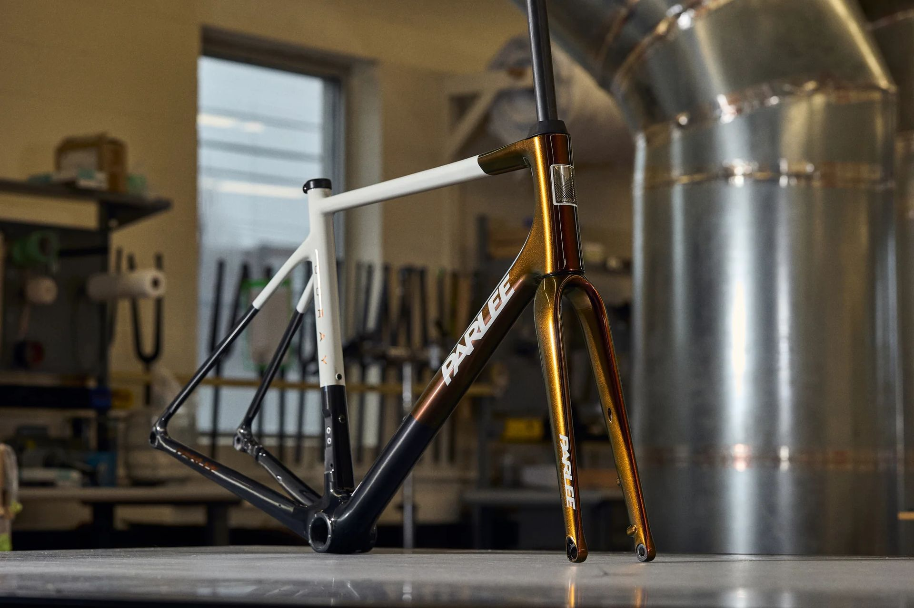
팔리의 엔지니어링 팀이 설계하고 포르투갈의 장인들이 손으로 완성하는 유레이 프레임은 불필요한 무게를 남기지 않는 정밀한 카본 레이업으로 만들어집니다. 모든 플라이가 정확한 위치에 놓이기 때문에 필러나 코스메틱 레이어, 접착제가 필요하지 않습니다. 그래서 숨길 것이 없습니다.
최고 수준의 카본 기술이 필요해 다른 제조사들이 거의 시도하지 않는 이 방식 덕분에, 프레임은 몰드에서 나오는 순간 흠 없는 표면을 갖습니다. 팔리가 유레이를 은은한 왁스 코팅의 로우 카본으로 선보이는 이유입니다.
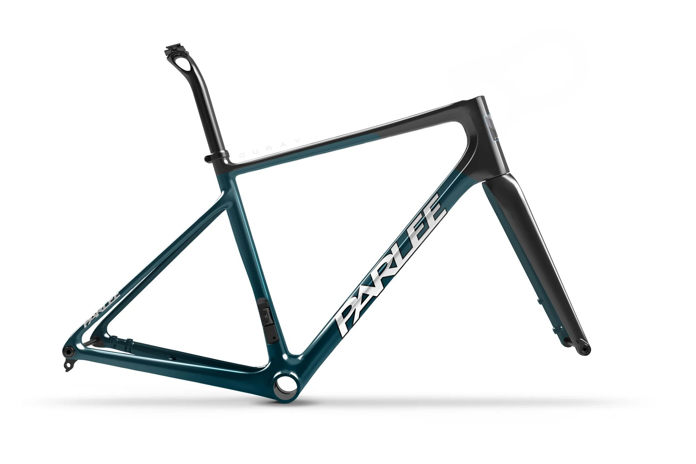
모든 프레임은 소량으로 한 대씩 만들어지고, 미국 본사에서 주문에 맞춰 개별 조립됩니다. 프레임 사이즈를 고르면 라이더의 신체 치수에 맞춰 사이즈와 라이딩 스타일에 꼭 맞는 피팅 부품을 골라 함께 구성합니다.
팔리 페인트 랩과 함께라면 커스터마이징의 가능성은 (거의) 무한합니다. 사이즈별로 세분화된 지오메트리와 개인에게 맞춘 부품 구성 덕분에, 유레이는 더 많은 라이더에게 처음부터 잘 맞는 자전거입니다.
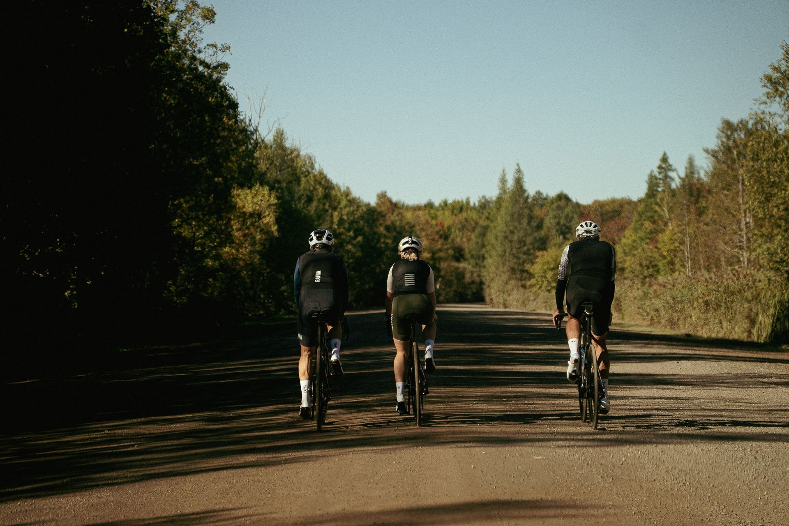
| 프레임 | UD 모노코크 카본 프레임 |
|---|---|
| 포크 | 전용 카본 포크 |
| 설계 | 슬로핑 탑튜브, 드롭 스테이 |
| 타이어 클리어런스 | 최적 30mm / 최대 40mm |
| 사이즈 | XS / S / M / L / XL |
| 제작 | 포르투갈 핸드 레이업, 미국 본사에서 주문 조립 |
| 컬러 | 아틀란틱 틸 / 모하비 실버 / 누드 카본(왁스 마감) |
| 커스텀 | 팔리 페인트 랩 커스텀 페인트 가능 |
| 수상 | 2025 Bicycling 올로드 바이크 오브 더 이어 |
A BETTER FIT FOR ANYONE단위 mm, 각도 °
| XS | S | M | L | XL | |
|---|---|---|---|---|---|
| 탑튜브 길이 (가상) | 507 | 526 | 547 | 568 | 588 |
| 스택 | 536 | 558 | 579 | 606 | 628 |
| 리치 | 363 | 366 | 375 | 382 | 393 |
| 헤드 앵글 | 70.75 | 71 | 71.5 | 72 | 72.5 |
| 싯튜브 앵글 | 75 | 74 | 73.5 | 73 | 72.5 |
| 싯튜브 길이 (실측) | 415 | 455 | 492 | 537 | 574 |
| 체인스테이 길이 | 420 | 420 | 420 | 420 | 420 |
| BB 드롭 | 80 | 80 | 80 | 80 | 77 |
| 포크 레이크 | 53 | 53 | 45 | 45 | 45 |
| 스탠드오버 | 693 | 728 | 759 | 798 | 831 |
| 헤드튜브 길이 | 125 | 147 | 164 | 191 | 214 |
| 프론트 센터 | 584 | 592 | 595 | 606 | 619 |
| 휠베이스 | 991 | 999 | 1002 | 1013 | 1027 |
| 포크 길이 | 380 | 380 | 380 | 380 | 380 |
스택과 리치를 먼저 비교하세요. 두 수치가 라이딩 포지션의 높이와 길이를 결정합니다. 정확한 사이즈는 루비워크샵 피팅 상담으로 안내해 드립니다.
The End of Compromise.
세분화된 그래블을
하나로 묶다.
그래블이 점점 더 세분화된 장르로 나뉘는 지금, 팔리 타오스(Taos)는 그 모두를 하나로 묶습니다. 모든 것을 가질 수 있는데 굳이 타협할 이유가 있을까요.
타오스는 그래블의 미래를 위해 만들어졌고, 보이는 모습 또한 그렇습니다. 포장도로가 끝나는 곳에서 비로소 살아나는 모던 그래블 바이크입니다. 2025년 BikeRadar와 CyclingPlus는 타오스를 그래블 바이크 오브 더 이어로 선정했습니다.
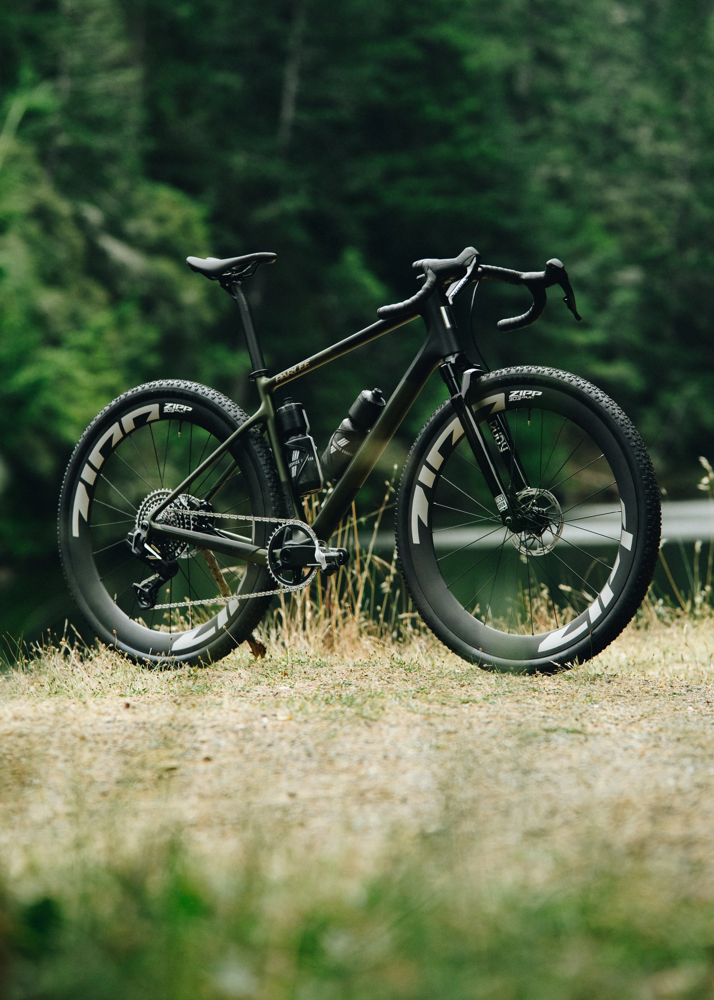
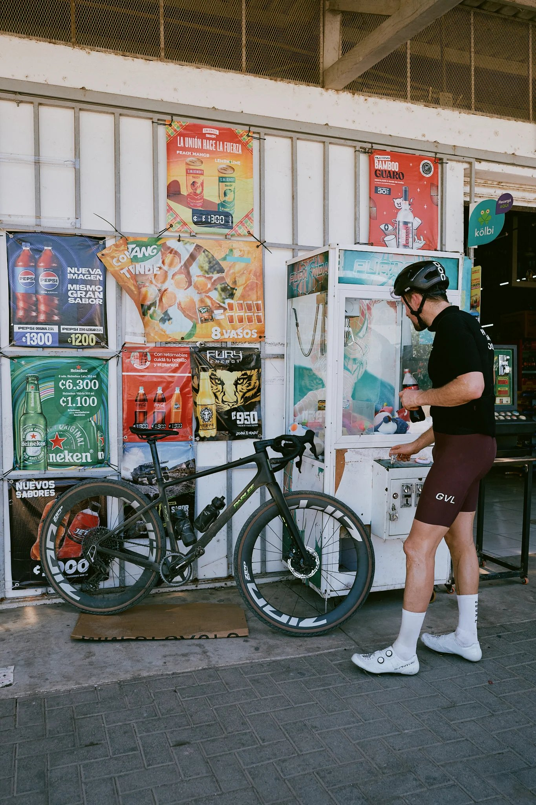
그래블 바이크로 위장한 로드바이크가 아닙니다. 탁월한 핸들링과 미래지향적 엔지니어링으로, 매번의 라이딩을 서사적인 모험으로 이끕니다.
즉각적인 가속과 하루 종일 이어지는 퍼포먼스를 위해 설계했습니다. 빠름은 타오스의 DNA입니다.
피팅과 스타일, 마감까지. 모든 팔리 자전거는 그것을 타는 라이더를 닮도록 개인화됩니다.
세밀한 부분까지 손으로 완성한 팔리는 다른 어떤 자전거와도 다른 라이딩을 선사합니다. 25년의 경험이 매 라이딩마다 느껴집니다.
뼈를 울리는 레이싱 바이크의 딱딱함과, 무겁고 둔한 어드벤처 빌드 사이에서 고를 필요가 없습니다. 고속의 효율과 험로에서의 침착함을 하나로 묶은 자전거. 이것이 그래블의 미래입니다.
SET UP TO RIDE YOUR WAY드리프트 블루 · 노던 올리브
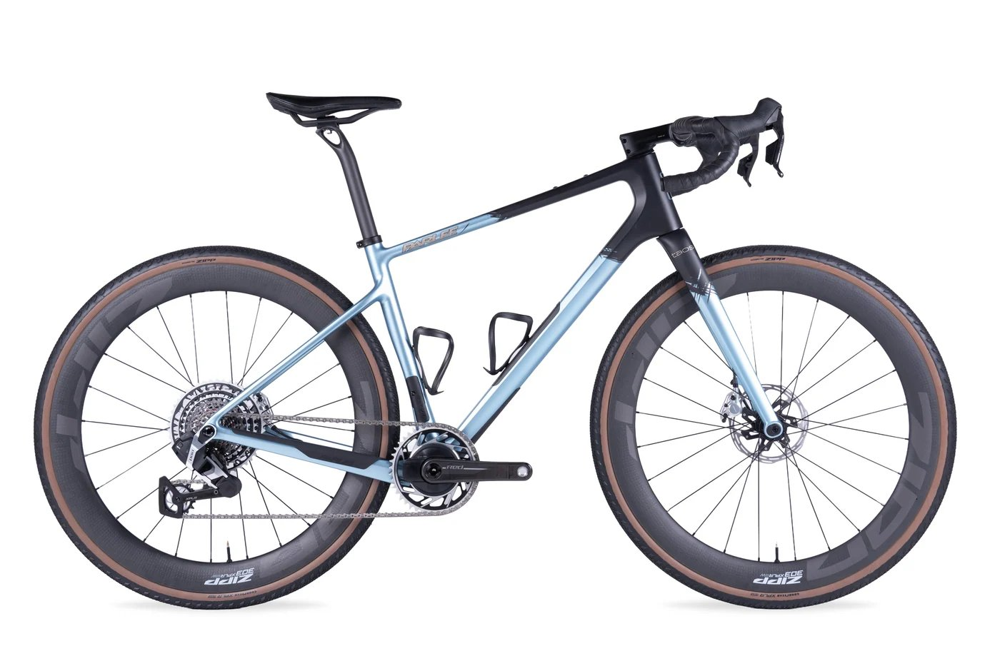
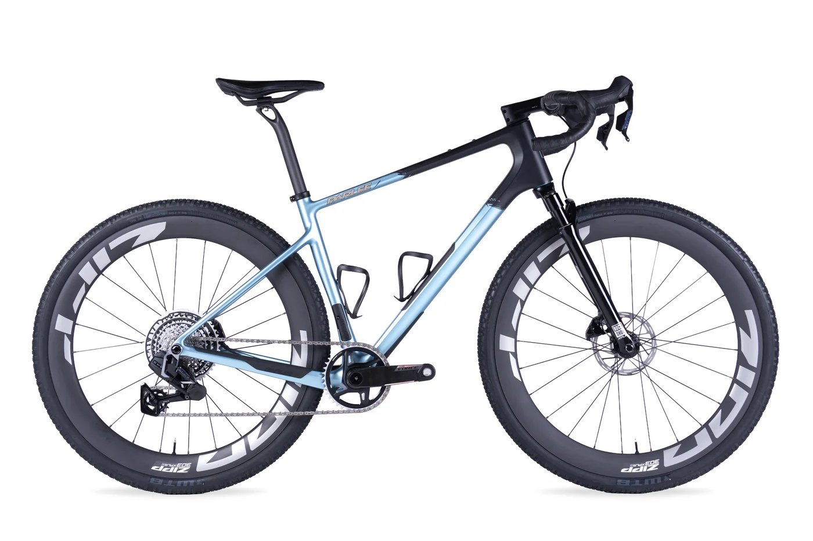
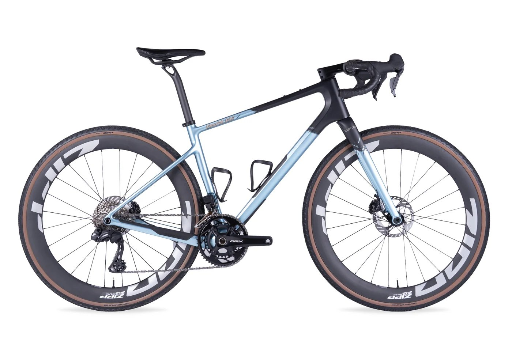
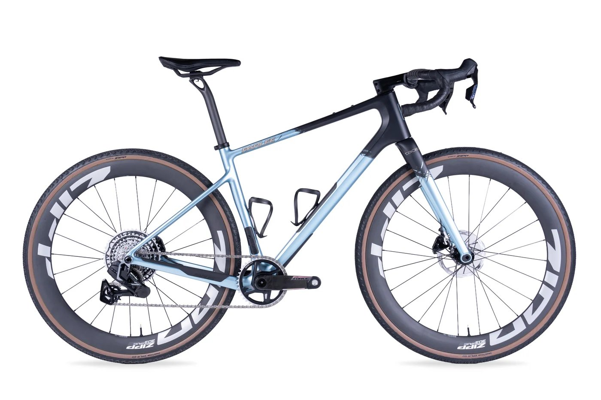
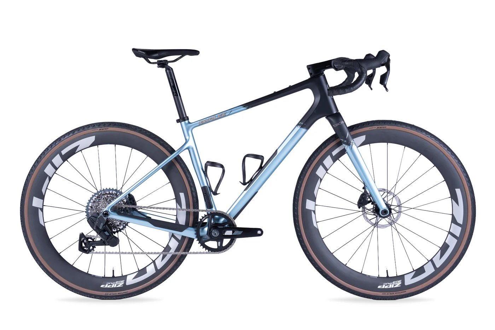
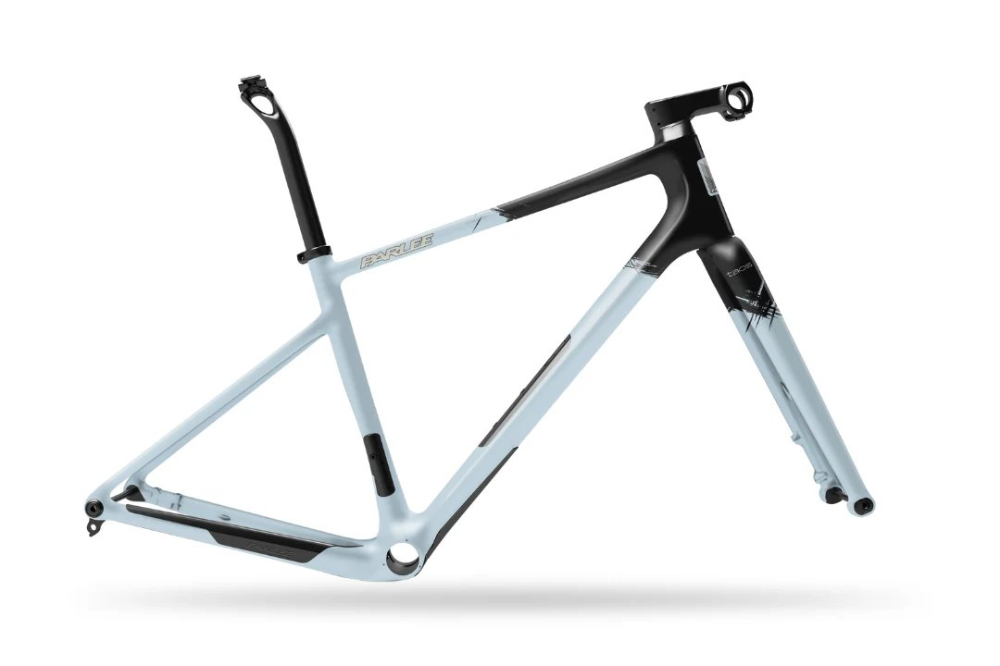
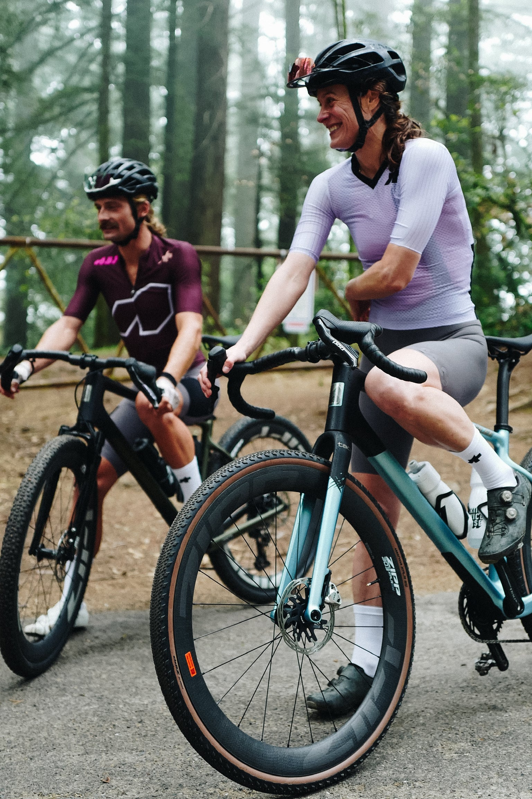
타오스는 더 길고 슬랙한 지오메트리로 기존 그래블 바이크와 과감히 결별합니다. 하지만 그 모든 선택에는 이유가 있습니다. 한눈에 봐도 넓은 타이어를 끼운 로드바이크가 아니라는 것을 알 수 있습니다. 타오스는 중독적일 만큼 자신감을 불어넣도록 처음부터 새롭게 설계한 콘셉트입니다.
모노코크 프레임 구조는 매우 가벼울 뿐 아니라 더 나은 동력 전달을 만들어냅니다. 비틀림 강성이 높은 하부와 콤팩트하게 기울어진 프론트 트라이앵글이 승차감을 부드럽게 하고, 라이더를 더 빠르게 합니다.
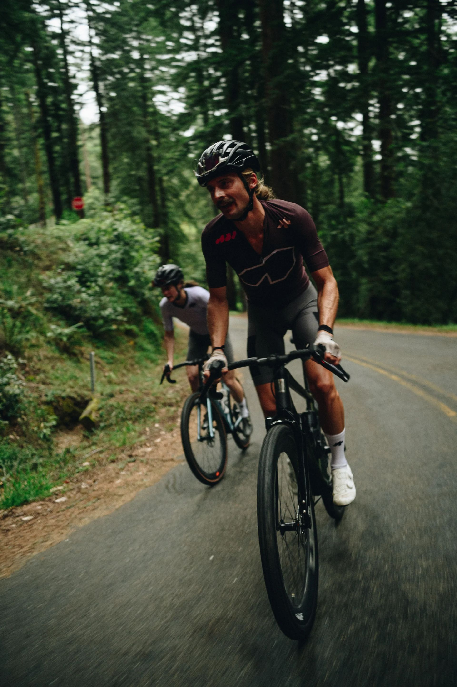
진보적인 설계와 정교하게 완성된 카본 레이업은 완전히 새로운 그래블 경험을 선사합니다. 긴 리치와 슬랙한 헤드 앵글은 고속에서 확신에 찬 안정적인 핸들링을, 낮은 BB와 짧은 체인스테이는 거친 노면을 다듬고 코너와 내리막에서 자전거를 노면에 붙여줍니다.
고속 안정성과 최대의 동력 전달로 험로를 넘고, 평지를 삼키고, 오르막을 날아오릅니다. 여섯 개의 프레임 사이즈는 각자 전용 레이업과 지오메트리를 가져, 가장 작은 사이즈부터 가장 큰 사이즈까지 같은 승차감을 전합니다.
넉넉한 50mm 타이어 클리어런스와 서스펜션 보정 지오메트리로 오프로드의 선택지는 끝이 없습니다. 탈착식 앞변속기 마운트로 1x와 2x 구성을 모두 지원하고, 승차감을 해치지 않고 서스펜션 포크를 더하거나 산악자전거 타이어까지 고를 수 있습니다.
타이어만 바꿔도 전혀 다른 노면에서 탁월한 승차감을 냅니다. 매끈한 저트레드 타이어는 포장도로에, 넓은 블록 타이어는 더 거친 지형에 맞춰집니다. 넉넉한 다운튜브 내부 수납공간, 펜더 마운트, 탑튜브 백 마운트, 스텔스 드로퍼 싯포스트 라우팅까지. 기록과 싸우든 해를 쫓든, 어떤 모험에도 준비된 자전거입니다.
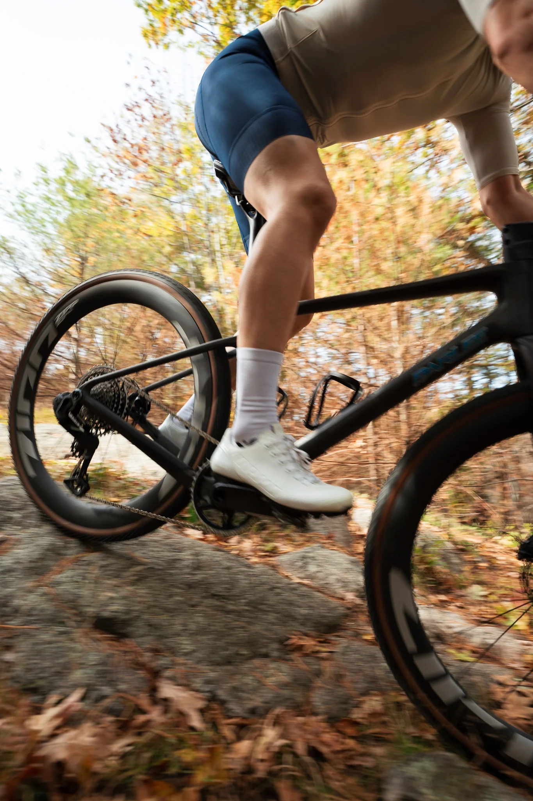
포르투갈 장인들이 손으로 만드는 정밀 레이업에는 죽은 무게가 없습니다. 모든 카본 플라이를 의도한 자리에 놓아 코스메틱 레이어나 필러, 접착제가 필요 없는 프레임을 완성합니다. 양산 카본 프레임 공정과 달리 덮어 가릴 것이 없습니다.
이렇게 공들인 제작 방식은 몰드에서 꺼낸 그대로 완벽한 표면을 만들어냅니다. 그래서 타오스를 왁스 마감의 완전한 누드 카본으로 선보입니다. 페인트 칩이나 스크래치 같은 외관 손상을 걱정할 필요도 없습니다.
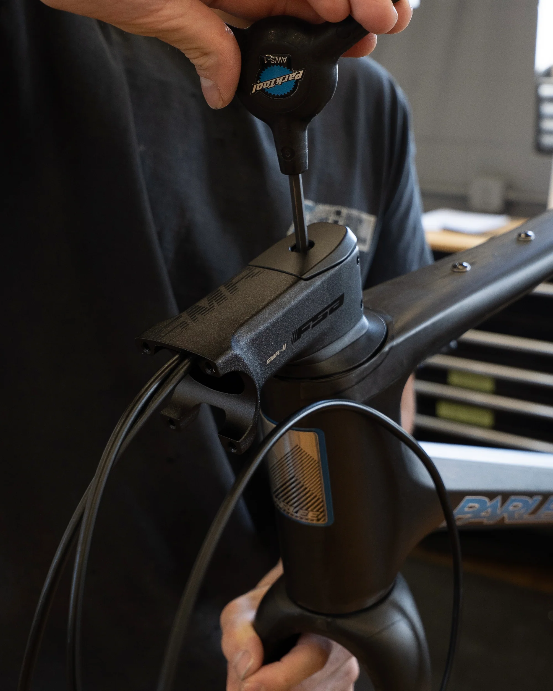
모든 프레임은 소량으로 한 대씩 만들어지고, 미국 본사에서 주문에 맞춰 개별 조립됩니다. 프레임 사이즈를 고르면 라이더의 신체 치수에 맞는 피팅 부품을 골라 구성합니다. 기본 빌드와 페인트를 선택해도, 모든 것을 직접 골라도 좋습니다. 결국 당신의 자전거니까요.
로고 컬러 옵션, 스탠다드 페인트 스킴, 완전한 커스텀 페인트까지. 커스터마이징의 가능성은 (거의) 무한합니다.
칠레 푸에르토몬트에서 출발해 세상의 끝, 아르헨티나 우수아이아에서 끝나는 울트라 챌린지 파이널 프런티어 파타고니아. 포장도로와 그래블, 외딴 비포장길, 가파른 오르막, 페리 횡단, 예측할 수 없는 날씨와 보급이 닿지 않는 긴 거리가 이어지는 이 코스에서 자전거는 생존과 탐험의 동반자가 됩니다.
라이더 데이브 아서(Dave Arthur)가 이 도전을 감당할 자전거를 묻자, 팔리의 답은 타오스였습니다. 더 큰 라이드와 더 거친 장소, 그리고 들려줄 이야기로 향하는 문을 여는 것. 팔리가 생각하는 좋은 자전거의 역할입니다.
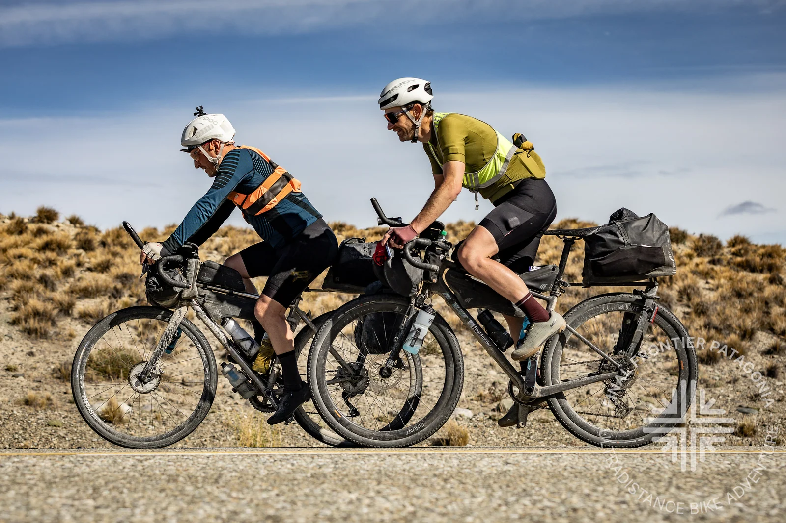
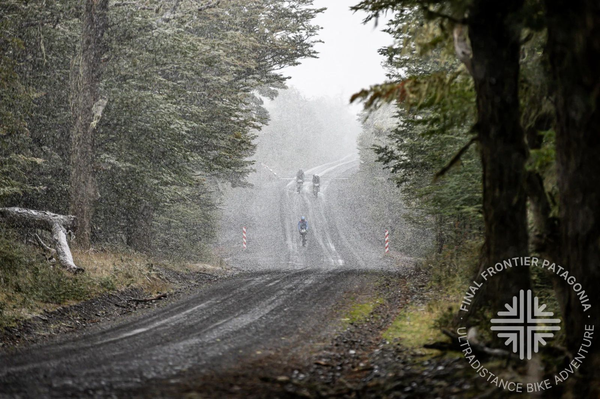
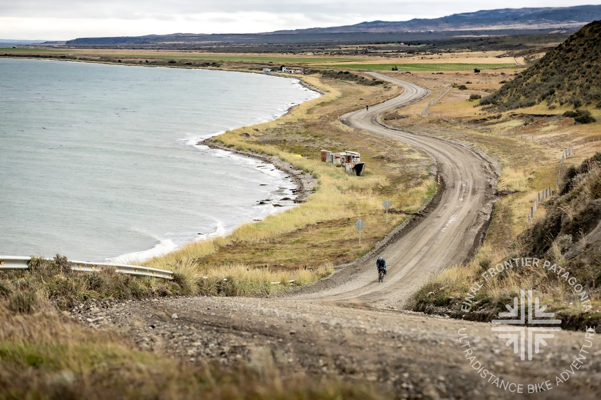
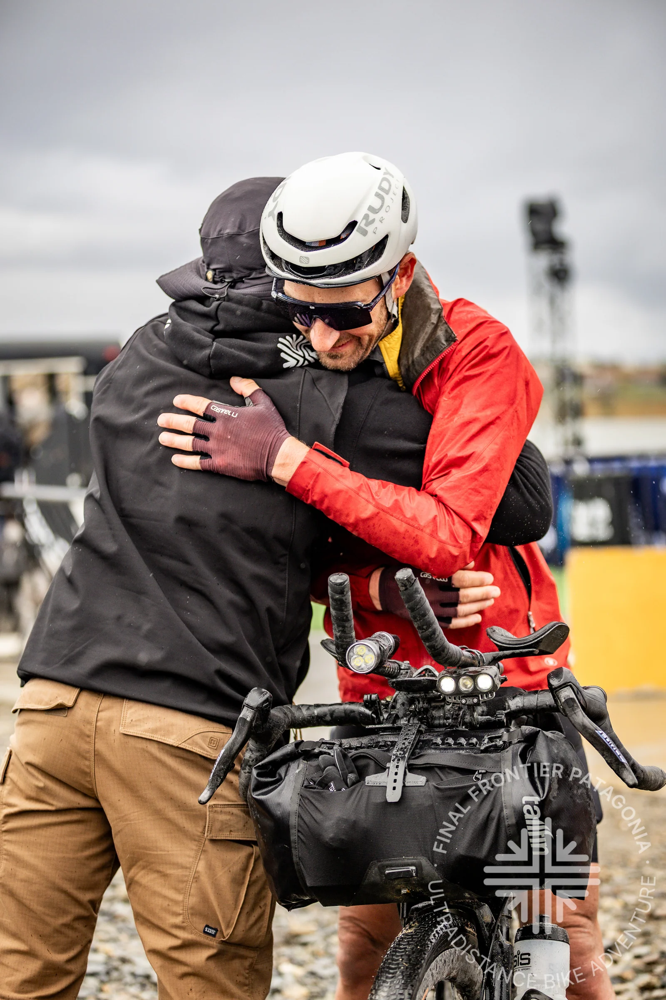
Image credit: Final Frontier Patagonia
| 프레임 | UD 카본 모노코크 프레임 |
|---|---|
| 포크 | 전용 카본 포크 / 서스펜션 포크 대응 지오메트리 |
| 지오메트리 | 롱 리치, 슬랙 헤드 앵글, 낮은 BB, 짧은 체인스테이 |
| 타이어 클리어런스 | 최적 45mm / 최대 50mm |
| 구동계 | 1x / 2x 대응 (탈착식 앞변속기 마운트) |
| 수납 · 마운트 | 다운튜브 내부 수납, 펜더 마운트, 탑튜브 백 마운트 |
| 싯포스트 | 스텔스 드로퍼 포스트 라우팅 |
| 사이즈 | 6개 사이즈, 사이즈별 전용 레이업 |
| 제작 | 포르투갈 핸드 레이업, 미국 본사에서 주문 조립 |
| 컬러 | 드리프트 블루 / 노던 올리브 / 누드 카본(왁스 마감) |
| 수상 | 2025 BikeRadar · CyclingPlus 그래블 바이크 오브 더 이어 |
Exceptional Performance.
Epic Days. Big (S)miles.
최고가 더 좋아졌습니다.
팔리의 Z 시리즈는 25년 넘게 장인정신과 품질, 반복을 거듭한 설계의 기준이 되어 왔습니다. 수많은 상을 받은 팔리의 플래그십 로드 플랫폼은 미국 보스턴에서 북쪽으로 45분 거리의 작은 공방에서 장인들의 손으로 만들어집니다.
2025년 완전히 새로워진 Z-Zero GT는 도로에 보내는 연서이자, 모두가 아닌 단 한 사람을 위해 자전거를 만든다는 가치의 재확인입니다. 수많은 산을 넘는 먼 거리를 빠르고 호사스러운 편안함으로 달리도록 설계했습니다. 어디로 향하든, 세대를 넘어 시선을 사로잡을 모던 클래식입니다.
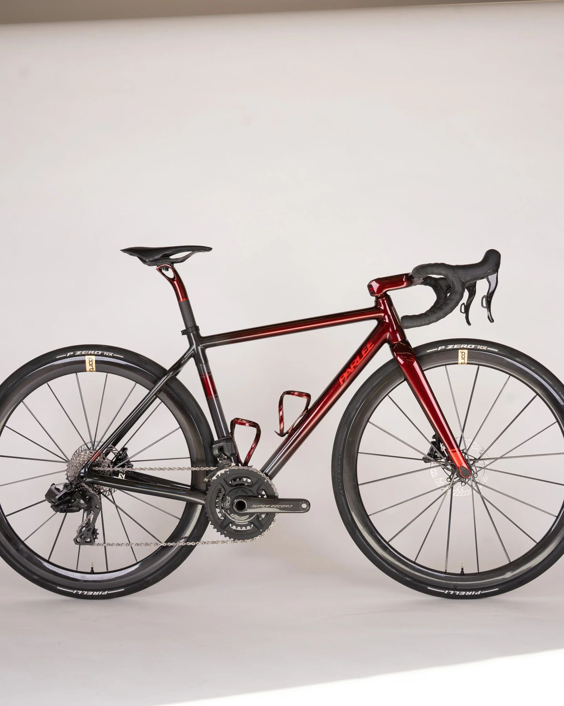
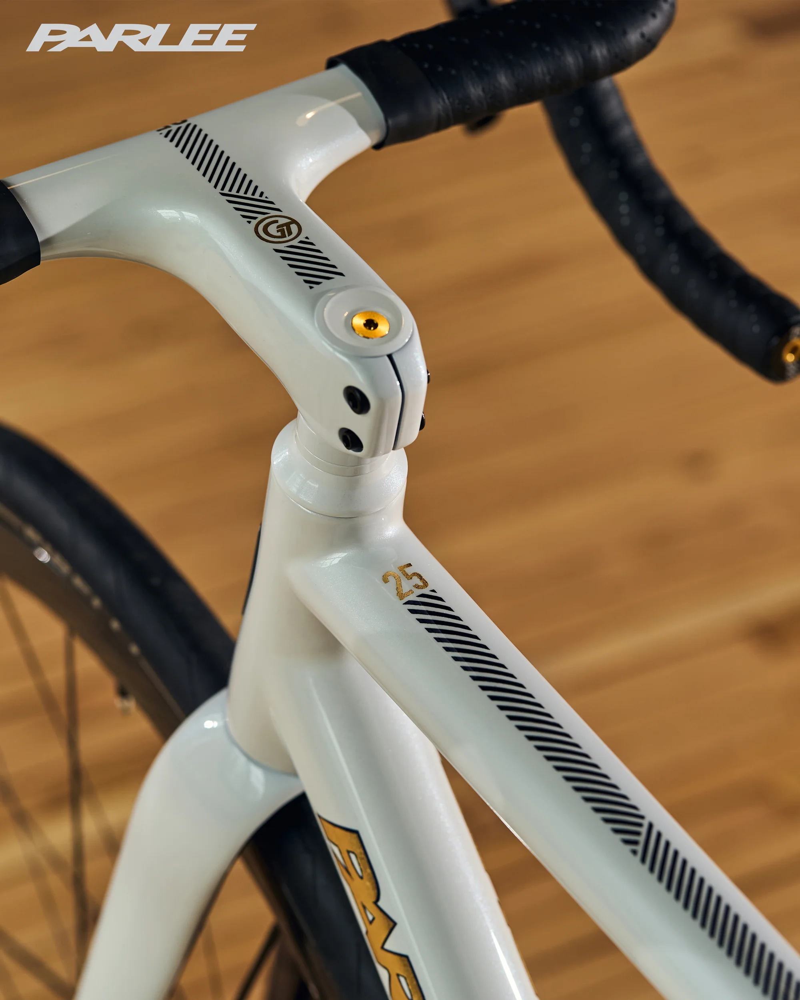
팔리의 자전거는 엔지니어링의 완성입니다. 획일적인 디자인과 익명의 대량생산에 대한 반작용이자, 비스포크 장인정신의 가치를 보여주는 결과물입니다. 보이는 표면부터 보이지 않는 곳까지 완벽을 극한까지 추구합니다.
모든 커스텀 Z 시리즈는 라이더 고유의 스타일을 반영하며 한계를 넓히고 경쟁을 앞지릅니다. GT는 로드 사이클링의 미래이자 끝없는 탐험의 욕구를 담고 있습니다.
Z 시리즈는 언제나 최고 수준의 제작 품질을 대표해 왔습니다. GT는 편안함과 반응성, 놀라운 속도를 위해 카본 레이업을 다시 한번 최적화했습니다. 역대 가장 빠른 Z 시리즈이자 같은 계열에서 가장 가벼운 자전거입니다.
25년간 다듬어온 정교한 카본 레이업은 진동을 흡수해, 섬세한 감각과 도로와의 순수한 연결만을 남깁니다.
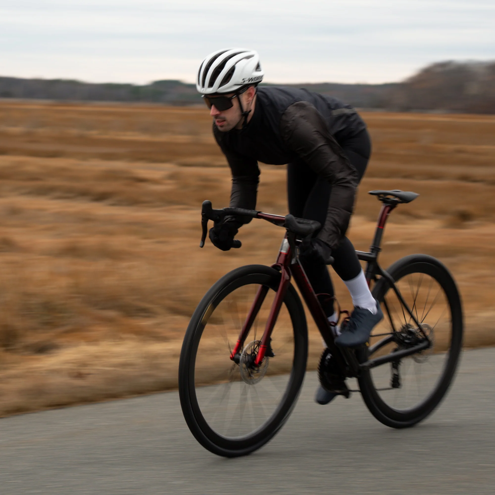
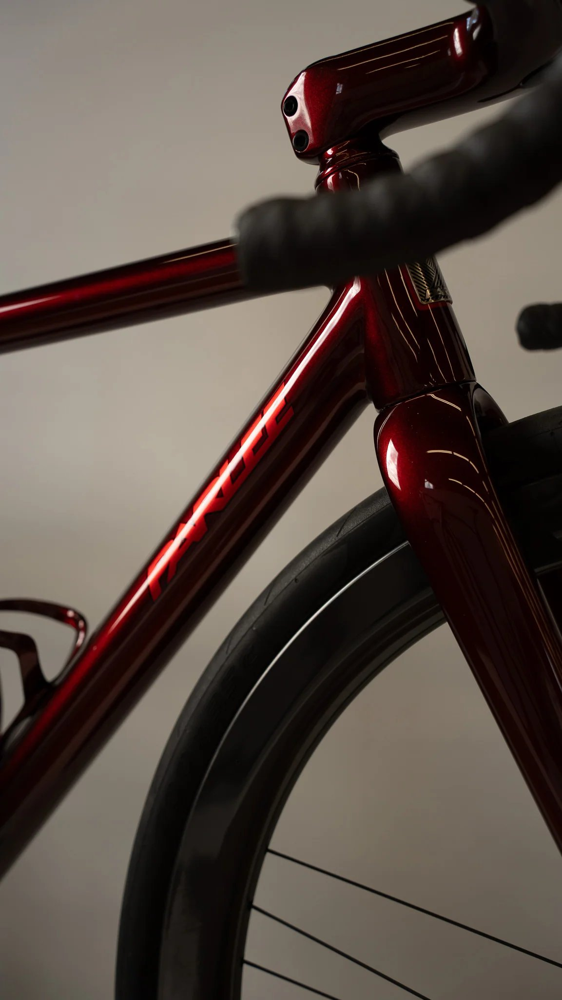
GT의 핸드메이드 프레임은 카본 파이버 기술의 정수를 보여주며, 세상에서 가장 부드러운 승차감을 선사합니다. 팔리 고유의 방식으로 카본 레이업을 한층 더 최적화해 편안함과 반응성, 그리고 놀라운 속도를 함께 끌어올렸습니다.
완전히 새로운 레이업과 설계로 이전 모델보다 무려 187g을 줄였습니다. 더 강하고 가벼운 풀 카본 UDH 체인스테이 모듈은 현재와 미래의 구동계 호환성을 열어줍니다. 팔리가 직접 설계하고 제작한 풀 인테그레이티드 포크는 케이블이 드러나지 않는 깔끔한 외관, 원피스 바·스템 호환성, 최대 40mm 타이어 클리어런스를 갖췄습니다. 프레임과 포크가 조화를 이뤄 승차감과 공기역학, 체감 속도가 모두 향상되었습니다.
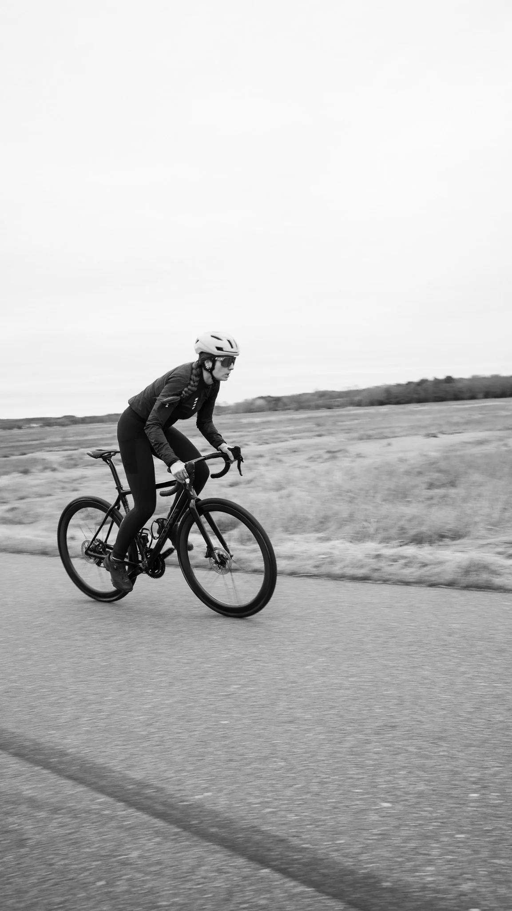
GT는 핸들링을 극대화하고 라이더의 편안함과 효율을 높이도록 처음부터 다시 설계했습니다. 일반적인 로드바이크보다 BB를 10mm 낮춰 무게중심을 내렸고, 이 작고 섬세한 변화가 안정감을 눈에 띄게 높입니다. 더 단단해진 새 체인스테이 모듈은 페달의 토크를 손실 없이 노면으로 전달합니다.
아스팔트에서 농로, 가끔의 그래블까지. GT는 어떤 노면이든 특유의 자신감으로 맞이합니다.
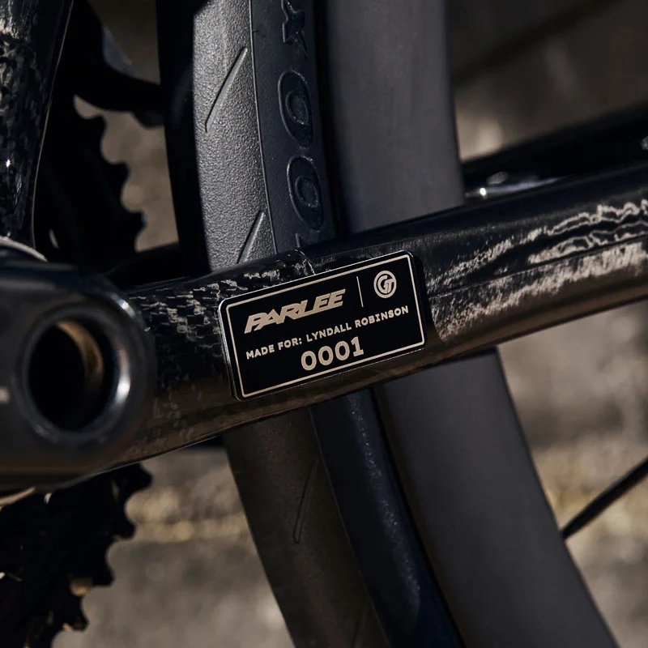
GT의 12가지 스탠다드 사이즈(레이스 또는 스포츠 지오메트리)는 각각 고유한 레퍼런스 지오메트리를 가지며, 라이더 개인에게 맞춘 크랭크 길이, 스템 길이, 핸들바 폭, 싯포스트 셋백, 안장 폭 조합으로 출고됩니다.
레퍼런스 사이즈는 시작일 뿐입니다. 풀 비스포크 Z-Zero GT를 선택하면 라이더의 프로필에 맞춘 지오메트리와 프레임 구성을 얻게 됩니다. GT가 몸의 일부처럼 느껴지도록 하는 초정밀 과정입니다. 그리고 팔리 페인트 랩은 상상할 수 있는 어떤 컬러와 디자인이든 현실로 만듭니다.
SET UP TO RIDE YOUR WAY스탠다드 GT 페인트 20컬러 또는 누드 카본 (커스텀 가능)
12개의 레퍼런스 지오메트리를 넘어, 라이더의 피팅 데이터에 맞춘 완전한 맞춤 지오메트리와 프레임 구성으로 제작합니다.
콕핏과 헤드셋, 물통 케이지, 싯포스트까지 프레임과 같은 컬러로 맞춰 도장하는 확장 페인트 옵션입니다.
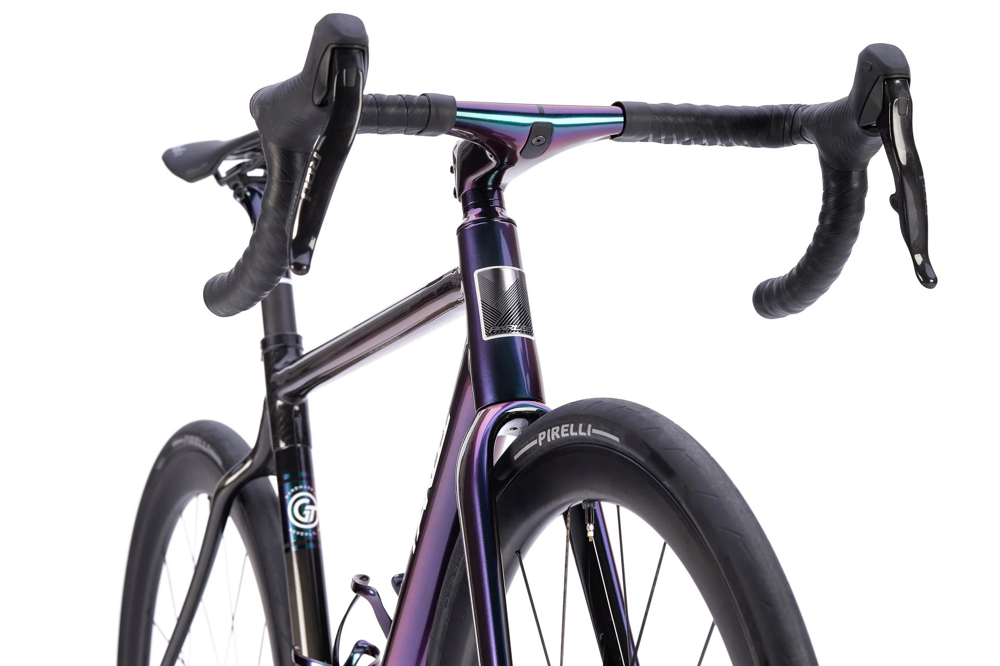
| 설계 | 모던 퍼포먼스 로드 지오메트리, 튜브 투 튜브 핸드메이드 구조, 미국 제작 |
|---|---|
| 지오메트리 | 12개 사이즈(레이스 · 스포츠), 커스텀 지오메트리 가능, 7~10° 슬로핑 탑튜브 |
| 튜빙 | 미국산 Z-Zero 전용 튜브, 라이더·사이즈별 강성 옵션 |
| 스테이 | GT 전용 핸드 레이업 체인·싯스테이, 사이즈별 라이더 최적화 레이업 |
| 타이어 클리어런스 | 32~35mm 최적화, 28~40mm 호환 (실측) |
| 싯포스트 | 팔리 카본 로드 포스트 31.6mm, 0mm / 25mm 오프셋 |
| 케이블 | 풀 인테그레이티드 내장 라우팅, 캄파놀로·스램·시마노 호환 |
| BB | 나사식 T47, 68mm, 티타늄 |
| 드롭아웃 | 컴프레션 몰딩 카본, UDH 호환, 쓰루액슬 12x142mm |
| 브레이크 | 플랫마운트 디스크, 내장 라우팅, 리어 140/160mm · 프론트 160/180mm |
| 앞변속기 | 브레이즈온, 팔리 카본 마운트, 34.9mm |
| 포크 | 팔리 GT 카본, 테이퍼드 D형 스티어러, 일체형 크라운 레이스, 12mm 쓰루액슬 |
| 헤드셋 | 세라믹스피드 SLT 세라믹 베어링, 상단 IS41 · 하단 IS47 |
| 마감 | GT 커스텀 스킴 20컬러 또는 누드 왁스 마감, 팔리 페인트 랩 커스텀 가능 |
| 프레임 무게 | 893g (53cm 기준) |
THE FINEST DETAILS단위 mm, 각도 °
| XS | S | M | L | XL | 2XL | |
|---|---|---|---|---|---|---|
| 스택 | 513 | 535 | 552 | 584 | 603 | 635 |
| 리치 | 375 | 378 | 388 | 396 | 405 | 407 |
| 탑튜브 길이 (가상) | 515 | 533 | 552 | 575 | 592 | 603 |
| 싯튜브 길이 (C-C) | 417 | 438 | 464 | 494 | 504 | 543 |
| 탑튜브 슬로프 (°) | 9 | 9 | 8 | 8 | 8 | 8 |
| 헤드 앵글 | 70.5 | 71.5 | 72 | 72.5 | 72.5 | 73 |
| 싯튜브 앵글 | 75 | 74 | 73.5 | 73 | 72.75 | 72.75 |
| 체인스테이 길이 | 422 | 422 | 422 | 422 | 422 | 422 |
| BB 드롭 | 80 | 80 | 80 | 80 | 77 | 77 |
| 포크 레이크 | 47 | 47 | 47 | 47 | 47 | 47 |
| 스탠드오버 | 725 | 745 | 766 | 794 | 807 | 846 |
| 헤드튜브 길이 | 102 | 121 | 137 | 169 | 192 | 220 |
| 프론트 센터 | 583 | 585 | 596 | 610 | 624 | 630 |
| 휠베이스 | 992 | 994 | 1005 | 1019 | 1035 | 1041 |
| 트레일 | 72 | 66 | 63 | 59 | 59 | 56 |
| 포크 길이 | 377 | 377 | 377 | 377 | 377 | 377 |
| XS | S | M | L | XL | 2XL | |
|---|---|---|---|---|---|---|
| 스택 | 535 | 558 | 572 | 606 | 627 | 650 |
| 리치 | 363 | 366 | 372 | 382 | 388 | 393 |
| 탑튜브 길이 (가상) | 510 | 528 | 543 | 568 | 583 | 595 |
| 싯튜브 길이 (C-C) | 437 | 461 | 487 | 512 | 539 | 564 |
| 탑튜브 슬로프 (°) | 9 | 9 | 8 | 8 | 8 | 8 |
| 헤드 앵글 | 70.25 | 71 | 71.5 | 72 | 72 | 72.25 |
| 싯튜브 앵글 | 75 | 74 | 73.5 | 73 | 72.75 | 72.75 |
| 체인스테이 길이 | 427 | 427 | 427 | 427 | 427 | 427 |
| BB 드롭 | 80 | 80 | 80 | 80 | 77 | 77 |
| 포크 레이크 | 47 | 47 | 47 | 47 | 47 | 47 |
| 스탠드오버 | 744 | 767 | 787 | 811 | 840 | 865 |
| 헤드튜브 길이 | 127 | 148 | 161 | 194 | 219 | 243 |
| 프론트 센터 | 582 | 586 | 592 | 608 | 621 | 630 |
| 휠베이스 | 996 | 1000 | 1006 | 1022 | 1036 | 1046 |
| 트레일 | 74 | 69 | 66 | 63 | 63 | 61 |
| 포크 길이 | 377 | 377 | 377 | 377 | 377 | 377 |
레이스 지오메트리는 낮고 긴 포지션을, 스포츠 지오메트리는 더 높은 스택과 짧은 리치로 편안한 포지션을 제공합니다. 커스텀 지오메트리는 피팅 데이터를 바탕으로 별도 설계합니다.
25년의 유산을 기리며, 창립자 밥 팔리와 그가 사이클링 산업, 그리고 카본 파이버 엔지니어링에 남긴 업적을 기념하는 한정판 Z-Zero GT입니다. 팔리가 그리는 '세상에서 가장 좋은 자전거'를 전 세계 엔지니어링 리더들의 한정판 컴포넌트로 완성했습니다. 오직 25대만 만들어지며, 다시는 만들지 않습니다.
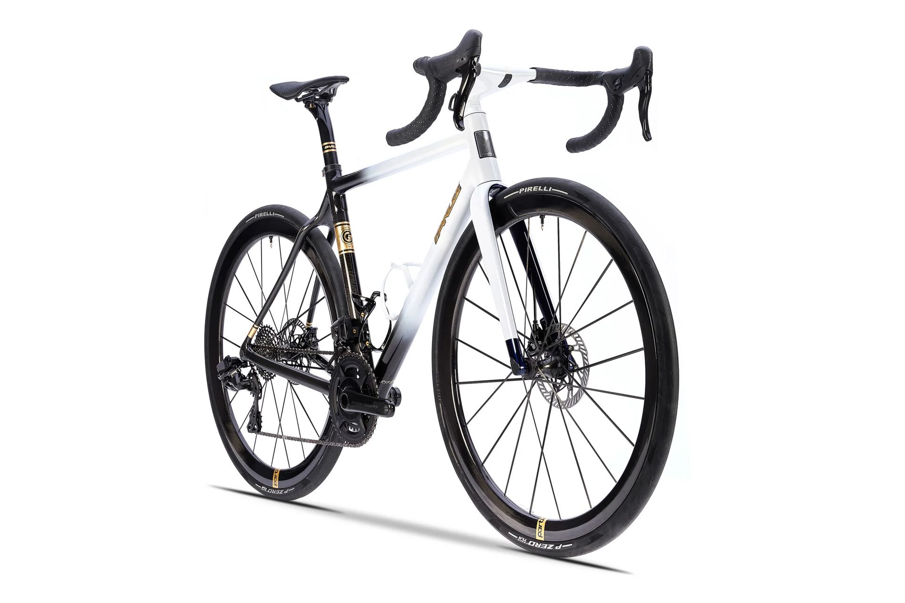
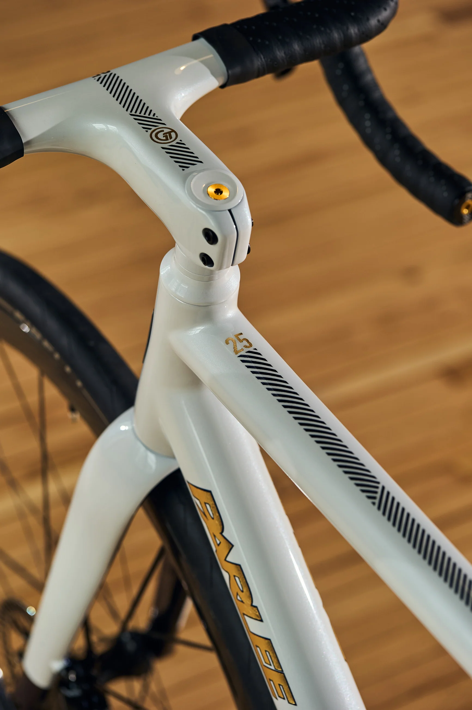
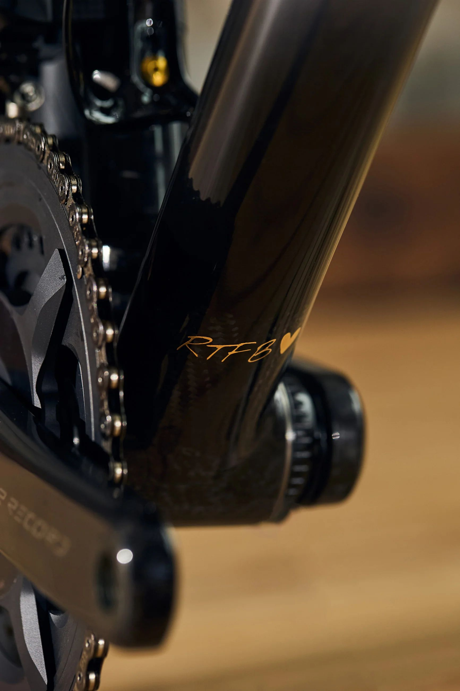
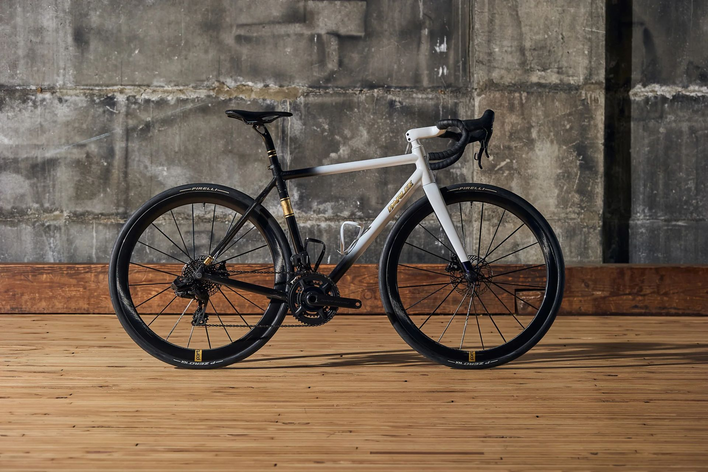
최고를 만든다는 것은 무엇을 의미할까요. 1999년, 밥 팔리는 그 질문에 답하기 위해 보트 빌더로서의 경력을 내려놓았습니다. 첫날부터 그의 목표는 세상에서 가장 좋은 자전거였고, 매일 아침 최고가 무엇인지 고민하며 눈을 떴습니다.
최고를 만드는 일은 정말 어렵습니다. 밥은 일이 어려워져도 결코 멈추지 않았습니다. 2024년 말 그가 세상을 떠날 때까지 매일 그와 함께 일했던 팀은, 그의 비전을 이어가며 그를 기리는 자전거를 만들기로 했습니다.
공식은 늘 단순했습니다. 최고의 소재를 구하고, 가장 숙련된 사람들에게 맡기고, 아름다운 것을 만들 시간과 공간을 주는 것. 여기에 구할 수 있는 최고의 컴포넌트를 더하면 돈으로 살 수 있는 최고의 자전거가 됩니다.
밥 곁에는 늘 종이와 연필이 있었고, 그의 스케치에는 명암을 표현하는 우아한 해칭이 담겨 있었습니다. 팔리 헤드 배지의 모티프가 된 이 선들을 탑튜브와 바·스템에 깊은 캔디 블루로 더했습니다. 손으로 입힌 24K 금박은 밥이 젊은 시절 작업했던 옛 범선의 금박 사인을 떠올리게 합니다.
밥은 전화로 이야기하기보다 작업대에 있기를 좋아한 조용한 사람이었습니다. 자전거의 승차감을 설명해 달라고 하면 그는 그저 "타 보세요"라고 답했고, 팀은 어느새 그 답을 'Ride The F***ing Bike'라 부르게 되었습니다. 힘든 날에도, 머리가 복잡할 때도, 답은 자전거에 올라 페달을 계속 돌리는 것일지 모릅니다.
2006년 설립된 팔리 페인트 랩은 본사 1층에 자리한, 북미 최고 수준의 자전거 페인팅 팀으로 꼽힙니다. 카본 파이버 위에 새로운 마감을 개척해 온 그들의 솜씨가 25주년 에디션의 모든 디테일에서 빛납니다.
커스텀은 복잡하지 않습니다.
12개의 레퍼런스 지오메트리,
무한한 피팅의 가능성.
25년이 넘는 시간 동안 팔리의 사명은 변하지 않았습니다. 세상에서 가장 좋은 자전거를 만드는 것. 팔리의 Z 시리즈는 언제나 매사추세츠 비벌리에서 100% 수작업으로, 그것을 탈 한 사람을 위해 만들어져 왔습니다.
팔리의 독보적인 커스터마이징 능력은 단순한 원칙 하나에서 시작되는 다층적인 과정의 결과입니다. 바로 '듣는 것'. 커스텀 바이크 제작에서 가장 중요한 것은 라이더와 피터, 그리고 빌더 사이의 소통이라는 것을 팔리는 알고 있습니다.
25년 넘게 축적한 커스텀 피팅 데이터를 분석해 12개의 레퍼런스 지오메트리를 만들었습니다. 라이더의 신체 치수와 라이딩 스타일이 요구하는 만큼 얼마든지 조정할 수 있으며, 그 결과 커스텀 카본 파이버 중 가장 넓은 범위의 지오메트리를 구현합니다.
모든 커스텀 설계는 팔리 독자의 CAD 시스템으로 라이더의 접점을 모델링하고 실제 프레임 지오메트리와 정렬해 진행합니다. 라이더가 승인하면 생산팀이 완벽한 피팅과 더 나은 승차감을 위한 정확한 치수와 카본 레이업 스케줄을 결정합니다.
모든 팔리는 라이더의 치수에 맞춘 부품과 함께 출고됩니다. 크랭크 길이, 콕핏 치수, 안장 폭, 싯포스트 오프셋을 한 사람 한 사람에 맞춰 고릅니다. 시마노, 캄파놀로, 스램 그룹셋과 ZIPP, HED, ENVE 등 원하는 무엇이든 구성할 수 있습니다.
커스텀 업계에서 가장 빠른 수준의 리드타임을 목표로 합니다. 일정을 예측 가능하게 지키고, 라이더가 자신의 자전거가 만들어지는 과정을 함께 알 수 있도록 합니다. (미국 공방 출고 기준)
HAND-BUILT IN BEVERLY설계부터 마감까지, 여섯 단계
모든 것은 라이더의 피팅 데이터에서 시작합니다. 커스텀 CAD 소프트웨어로 완벽한 자전거의 청사진을 그리고, 튜브 하나를 만들기 전에 모든 디테일을 문서로 보내 다시 확인합니다.
고성능 복합소재의 기준인 프리미엄 UD 프리프레그 카본으로 시작합니다. 모든 튜브와 서브 어셈블리는 라이더 개인을 위해 손으로 만들며, 미리 만들어 두는 부품은 하나도 없습니다.
라이더가 원하는 승차감에 맞춰 튜브를 고르고 조립합니다. 마이터 가공한 튜브에 러그를 손으로 결합해 강성을 조율하며, 올바른 섬유 방향이 프레임 강도와 승차감의 핵심입니다.
팔리 독자의 가열·가압 공정을 거쳐 깨지지 않는 결합을 만들어냅니다. 이 몰딩 공정이 일관된 표면 마감을 보장합니다.
페인트나 왁스 마감 전에 프레임을 손으로 샌딩하고 세척합니다. 케이블 스톱과 앞변속기 마운트 같은 카본 피팅도 모두 자체 제작해, 프레임과 부품 사이를 가장 가볍고 강하게 연결합니다.
점점 더 고운 사포로 이어지는 철저한 습식 샌딩으로 거울 같은 광택을 만듭니다. 페인트를 입히든 누드로 남기든, Z-Zero GT는 어디서든 돋보이도록 만들어집니다.
모든 팔리 Z-Zero는 매사추세츠 비벌리의 최신 설비를 갖춘 팔리 공방에서 만들어집니다. 사진 속 Z-Zero GT는 카본 위에 유광 클리어코트를 올리고 롤링 썬더 컬러 로고로 마감했습니다.
루비워크샵에서는 피팅 데이터 측정부터 지오메트리 확인, 페인트 디자인, 출고 후 관리까지 팔리 비스포크의 모든 과정을 함께합니다.
당신의 컬러,
당신의 디자인,
당신의 스타일.
팔리 페인트 랩(Parlee Paint Lab)은 세계 최고 수준의 페인트 프로그램 중 하나로 인정받고 있습니다. 결정을 쉽게 도와주는 사전 디자인 스킴부터, 꿈꿔온 디자인을 그대로 구현하는 풀 커스텀까지. 차분하든 과감하든, 팔리 페인트 랩은 모두 해냅니다.
2006년 설립되어 본사 1층에 자리한 페인트 랩은 카본 파이버 위의 새로운 마감을 개척해 온 팀입니다.
20 BRILLIANT COLORS모든 컬러 무광 · 유광 선택 가능
팔리 페인트 랩은 20가지 컬러 팔레트를 제공합니다. 시선을 사로잡는 대담한 색이든 절제된 세련미든, 라이더의 개성과 스타일을 온전히 표현할 수 있습니다.
모니터 환경에 따라 실제 컬러와 다르게 보일 수 있습니다. 루비워크샵에서 컬러 샘플로 최종 확인하실 수 있습니다.
팔리 시그니처 누드 카본 마감에 원하는 데칼 컬러를 더합니다. 4가지 로고 팩 중에서 고를 수 있어, 유레이와 타오스를 손쉽게 나만의 스타일로 꾸밀 수 있습니다.
커스텀 페인트의 세계로 들어서는 첫걸음. 20가지 페인트 갤러리에서 프레임 컬러와 로고 컬러를 각각 고릅니다.
한계가 없습니다. 팔리 사내 디자인팀과 함께 풀 커스텀으로 상상한 디자인을 현실로 만듭니다. 라인업의 컬러를 고르거나, 완전히 메뉴 밖의 컬러를 선택할 수도 있습니다.
25년 넘게,
타는 것을 넘어
경험하는 자전거.
팔리는 커스텀 지오메트리로 잘 알려져 있지만, 900g 이하 카본 로드 프레임을 처음 만든 브랜드이기도 합니다. 몇 년 뒤에는 800g의 벽까지 넘어섰습니다. 그 여정에서 팔리의 설계는 Bicycling 매거진 에디터스 초이스, Cycling Weekly 레이스 바이크 오브 더 이어, 유로바이크 디자인 어워드, Bicycling 올로드 바이크 오브 더 이어, BikeRadar 그래블 바이크 오브 더 이어 등 굵직한 상을 받았습니다.
밥 팔리가 팔리 사이클을 설립하고 첫 프로토타입을 제작합니다.
첫 Z1 프레임을 대중에게 공개합니다.
첫 Z2, Z3 프로토타입을 제작합니다.
900g 이하의 프레임을 처음으로 출고합니다.
첫 커스텀 슬로핑 지오메트리 Z3를 선보입니다.
Cycling Weekly가 Z3를 레이스 바이크 오브 더 이어로 선정합니다.
Bicycling 매거진이 Z1을 에디터스 초이스로 선정하고, 팔리는 Z4를 선보입니다.
업계 최초의 플렉스 핏 지오메트리로 스톡 프레임이 더 많은 라이더에게 맞도록 합니다.
Z5로 800g의 벽을 넘어섭니다.
Parlee x Prius 프로젝트로 '뉴럴 시프팅'이라는 미래의 단면을 보여줍니다.
커스텀 카본 프레임의 새로운 기준, Z-Zero를 선보입니다.
새로운 Z5i와 TTi 모델을 선보입니다.
팔리의 첫 에어로 로드 ESX와 TTiR을 선보입니다.
모바도와 협업해 카본 파이버 시계를 선보이고, 알텀(Altum) 패밀리를 출시합니다.
첫 그래블 바이크 체바코(Chebacco)와 Z-Zero XD를 선보입니다.
디스크 브레이크를 단 첫 트라이애슬론 바이크, 새로운 TTiR을 출시합니다.
차세대 퍼포먼스 에어로 로드 RZ7을 선보입니다.
원피스 모노코크 프레임의 모던 로드바이크 유레이를 선보입니다. 새 CEO이자 오너 존 해리슨(John Harrison) 체제의 첫 모델입니다.
유레이와 같은 모노코크 구조의 미래지향적 그래블 바이크 타오스를 선보입니다.
Bicycling 매거진이 유레이를 올로드 바이크 오브 더 이어로 선정합니다.
BikeRadar와 CyclingPlus가 타오스를 그래블 바이크 오브 더 이어로 선정합니다.
어떻게 달리는지, 무엇이 필요한지 들려주세요. 루비워크샵이 모델 선택부터 사이즈와 피팅, 빌드 구성, 페인트까지 나에게 꼭 맞는 팔리를 함께 찾아드립니다.